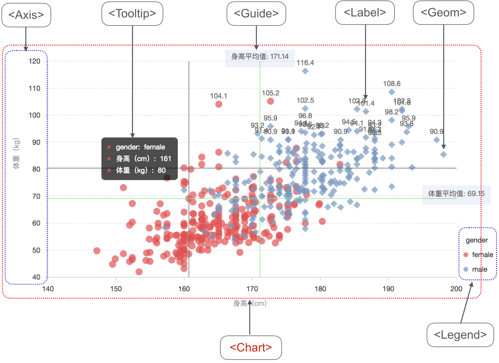

BizCharts & iceWorks 飞冰
BizCharts iceWorks 飞冰模板 阿里前端框架 bizCharts 文档 数据可视化，BizCharts图表库入坑历程 ice-scripts 使用指南 iceWorks 基础配置 iceWorks Webpack 配置
- BizCharts & iceWorks 飞冰
- installation
- Load by models
- GettingStart
- Basic
- Basic for CDN
- Demos
- BizCharts 图表构成组件
- Chart
- Coord
- Geom
- Axis
- Label
- Label.content * String | Array:[String, Function] *
- Label.labelLine * Object *
- Label.offset * Number *
- Label.textStyle * Object *
- Label.autoRotate * Boolean *
- Label.formatter * Function *
- Label.htmlTemplate * Function *
- ToolTip
- ToolTip.showTitle * Boolean *
- ToolTip.crosshairs * Object *
- ToolTip.offset * Number *
- ToolTip.containerTpl * String *
- ToolTip.itemTpl String
- ToolTip. g2-tooltip | g2-tooltip-title | g2-tooltip-list | g2-tooltip-list-item | g2-tooltip-marker Object
- ToolTip.inPlot * Boolean *
- ToolTip.follow * Boolean *
- ToolTip.shared * Boolean *
- ToolTip.position * ‘top’|’bottom’|’left’|’right’ *
- ToolTip.triggerOn * String:[‘mousemove’|’click’|’none’] *
- ToolTip.title * string *
- ToolTip.enterable * boolean *
- 其他配置
- 示例
- Legend
- 1、name String
- 2、visible Boolean
- 3、position ‘top’|‘left’|‘right’|‘bottom’
- 4、title Boolean
- 5、offsetX Number
- 6、offsetY Number
- 7、itemGap Number
- 8、itemMarginBottom Number
- 9、itemWidth Number
- 10、unChecked Number
- 11、background Number
- 12、allowAllCanceled Boolean
- 13、itemFormatter Function
- 14、marker String
- 15、textStyle Object
- 16、clickable Boolean
- 17、hoverable Boolean
- 18、selectedMode ‘single’ | ‘multiple’
- 19、onHover Function
- 20、onClick Function
- 分类 html 自定义图例
- 连续图例
- 自定义混合图例
- 示例
- Guide
- Facet
- 分面类型
- View
- G2
- Animate
- Shape
- sliderPlugin
- Installation
- sliderPlugin.width
- sliderPlugin.height
- sliderPlugin.padding
- sliderPlugin.xAxis
- sliderPlugin.yAxis
- sliderPlugin.data
- sliderPlugin.start
- sliderPlugin.end
- sliderPlugin.scales
- sliderPlugin.fillerStyle object
- sliderPlugin.backgroundStyle
- sliderPlugin.textStyle
- sliderPlugin.handleStyle
- sliderPlugin.backgroundChart
- onChange
飞冰 Iceworks 是阿里 Fusion Design 体现下的面向开发者的框架，其图标库采样了 BizCharts，也采样了百度的 Echarts。通过官方提供的 Iceworks GUI 工具和 ice-scripts 脚手架工具可以快速复用 Iceworks 的模板工程。
<Chart forceFix /> 可以让图表自适应，宽度，但是注意了，缩小就挂掉了并不自适应。实验测试表明，如果Chart组件的父组件Father采用flex布局，即Father使用flex自适应宽度，那么就会出现上述的问题；所以，如果有多个图表同行并列布局，请不要使用flex布局，给Father组件的宽度设置为百分比吧，此时的forceFit就会起作用了。同时，BizCharts对重绘设置了防抖，只有当停止缩放的时候才会重绘。
假如 Tooltip 开启的是辅助线，即type不是“rect”，那么上述的样式定义将不起作用。究其原因，看了此组件的源码之后才发现，描述辅助线样式的属性不是style对象，而是lineStyle对象，官方文档并未说明这一点。
<Tooltip
crosshairs={{
type: "y"
lineStyle: {
stroke: 'red', // 辅助线颜色
lineWidth: 4, // 辅助线宽度，单位为px
opacity: 1 // 辅助线透明度
}
}}
/>
图表渐变色
<Geom
type="interval"
position="xAxis*yAxis"
tooltip={["xAxis*yAxis", getTooltipData]}
color={['xAxis', '#3DA4FF-#FFFFFF']}
/>
<Geom
type="interval"
position="xAxis*yAxis"
tooltip={["xAxis*yAxis", getTooltipData]}
color={['xAxis', 'l(90) 0:#3DA4FF 1:#FFFFFF']}
/>
note：l是指线性渐变，90是指旋转九十度，即从上到下渐变，默认 to-right。看官们可以多试试几个姿势，啊呸，多试试几个角度。
0和1标定的色值标明初始色值和终止色值，注意一点，色值不可以使用颜色名字，如“red”、“blue”等，可添加多个渐变色值，如
color="l(90) 0:#000000 0.5:#FFFFFF 1:#000000"
动态视图
不过话说回来，当数据更新时，从旧数据切换到新数据，会很突兀，没有缓冲过程，看着特别不舒服。我寻思着，在数据更新的时候，加个动画呗！但是初始动画生效了，更新动画就不生效了（如看官们知道解决办法，请不吝赐教）。由于赶着下班，我决定使用DataSet：一个用于管理表格数据的神器，据说更新数据的时候，其会给我弄个动画（除此以外有方便地导入非json数据等等功能，下文有一些例子，具体细节我没有详细去研究，以后学习了再分享）。唔好理，总之好犀利！
// 安装
// npm install @antv/data-set
// 引入
import DataSet from '@antv/data-set';
// 生成一个View实例，作为类的属性，故不要在render方法里面生成这个实例
dv = new DataSet().createView();
render() {
this.dv.source(data);
<Chart
height={ 400 }
data={ this.dv }
forceFit
></Chart>
}
installation
npm
$ npm install bizcharts
umd
<script src="https://unpkg.com/bizcharts@${version}/umd/BizCharts.min.js"></script>
<script src="https://unpkg.com/bizcharts@3.5.5/umd/BizCharts.min.js"></script>
dev build
$ git clone https://github.com/alibaba/BizCharts.git $ cd BizCharts $ npm install $ npm run build
dev demo
$ sudo vi /etc/hosts // add 127.0.0.1 localhost $ npm run[-script] demo // open in browser http://localhost:3510/
Usage
import {Chart, Axis, Tooltip, Geom} from "bizcharts";
const data = [...];
<Chart height={400} data={data} forceFit>
<Axis name="month" />
<Axis name="temperature" label={{formatter: val => `${val}°C`}} />
<Tooltip crosshairs={{type : 'y'}} />
<Geom type="line" position="month*temperature" size={2} color={'city'} />
<Geom type="point" position="month*temperature" size={4} color={'city'} />
</Chart>
Load by models
按需加载 自 bizcharts@3.1.8 版本起，开始支持按需加载资源文件的功能。
g2 中资源主要是分为 core 和 对应个 geom 资源，g2 用户需要声明使用了哪个 geom。
在 bizcharts 中也类似，需要用户自己声明需要加载的资源模块,因此加入了各个类别的 geom 组件，具体有：
组件 说明 <Line> 相当于 <Geom type='line'> <Interval> 相当于 <Geom type='interval'> <Area> 相当于 <Geom type='area'> <Point> 相当于 <Geom type='point'> <Path> 相当于 <Geom type='path'> <Edge> 相当于 <Geom type='edge'> <Heatmap> 相当于 <Geom type='heatmap'> <Polygon> 相当于 <Geom type='polygon'> <Schema> 相当于 <Geom type='schema'> <Venn> 相当于 <Geom type='venn'>
** 因此如果想要按需加载 bizcharts 资源，请使用命名后的 geom 组件，例如
需要使用原先 bizcharts 上的工具函数，请加载 import Chart from ‘bizcharts/lib/core’ 具体有： 资源 说明 G2 G2 的命名空间,详细请点击. Animate 动画 详细请点击. Shape 构成图表的图形，用户自定义图形，详细请点击 setTheme 用于设置图表的主题,详细请点击. track 使用打点，详细请点击 PathUtil 详细请点击 Util 详细请点击
直接加载需要的组件和模块使用即可。
import * as bizUtil from 'bizcharts/lib/core'
import Chart from 'bizcharts/lib/components/Chart';
import Axis from 'bizcharts/lib/components/Axis';
import Line from 'bizcharts/lib/components/TypedGeom/Line';
bizUtil.setTheme('dark');
ReactDOM.render(
<Chart
width={600}
height={500}
data={[
{ year: "1991", value: 3 },
{ year: "1992", value: 4 },
{ year: "1993", value: 3.5 },
{ year: "1994", value: 5 },
{ year: "1995", value: 4.9 },
{ year: "1996", value: 6 },
{ year: "1997", value: 7 },
{ year: "1998", value: 9 },
{ year: "1999", value: 13 }
]}
>
<Axis />
<Line position="year*value"/>
</Chart>
,
mountNode
);
GettingStart
快速使用Usage
import { Chart, Axis, Legend, Tooltip, Geom } from 'bizcharts';
const data = [
{ month: 'Jan.', count: 69, city: 'tokyo' },...
];
const scale = {
month: {alias: 'Month',},
count: {alias: 'Sales',},
};
ReactDOM.render((
<Chart height={400} data={data} scale={scale} forceFit>
<Axis title name="month" />
<Axis title name="count" />
<Legend />
<Tooltip crosshairs={{ type: 'rect' }} />
<Geom type="interval" position="month*count" color="month" />
</Chart>
), document.getElementById("mountNode"));
页面 CDN 引入方式运行，import Component 改 React.Component:
<!DOCTYPE html>
<html>
<head>
<meta charset="utf-8"/>
<title> Hello React! </title>
<script src="https://cdn.staticfile.org/react/16.4.0/umd/react.development.js"> </script>
<script src="https://cdn.staticfile.org/react-dom/16.4.0/umd/react-dom.development.js"> </script>
<script src="https://cdn.staticfile.org/babel-standalone/6.26.0/babel.min.js"> </script>
<script src="https://cdn.staticfile.org/redux/4.0.1/redux.min.js"></script>
<script src="https://cdn.staticfile.org/react-redux/6.0.1/react-redux.min.js"></script>
<script src="https://cdn.staticfile.org/prop-types/15.7.2/prop-types.js"></script>
<script src="https://unpkg.com/bizcharts@3.3.0/umd/BizCharts.min.js"></script>
</head>
<body>
<div id="example">
</div>
</body>
</html>
<script>
// import {Component} from 'react';
let Component = React.Component;
</script>
Basic
基于 React 组件实现 DEMO
import React from "react";
import {G2, Chart, Geom, Axis, Tooltip, Coord, Label, Legend, View, Guide, Shape, Facet, Util } from "bizcharts";
class Basic extends React.Component {
render() {
const data = [
{year: "1991", value: 15468 },
{year: "1992", value: 16100 },
{year: "1993", value: 15900 },
{year: "1994", value: 17409 },
{year: "1995", value: 17000 },
{year: "1996", value: 31056 },
{year: "1997", value: 31982 },
{year: "1998", value: 32040 },
{year: "1999", value: 33233 }
];
const cols = {
value: {
min: 10000
},
year: {
range: [0, 1]
}
};
return (
<div>
<Chart height={window.innerHeight} data={data} scale={cols} forceFit>
<Axis name="year" />
<Axis
name="value"
label={{
formatter: val => {
return (val / 10000).toFixed(1) + "k";
}
}}
/>
<Tooltip
crosshairs={{
type: "line"
}}
/>
<Geom type="area" position="year*value" />
<Geom type="line" position="year*value" size={2} />
</Chart>
</div>
);
}
}
export default Basic;
Basic for CDN
<!DOCTYPE html>
<html>
<head>
<meta charset="utf-8"/>
<title> Hello BizCharts for React! </title>
<script src="https://cdn.staticfile.org/react/16.4.0/umd/react.development.js"> </script>
<script src="https://cdn.staticfile.org/react-dom/16.4.0/umd/react-dom.development.js"> </script>
<script src="https://cdn.staticfile.org/babel-standalone/6.26.0/babel.min.js"> </script>
<script src="https://unpkg.com/bizcharts@3.3.0/umd/BizCharts.min.js"></script>
</head>
<body>
<div id="example"> </div>
</body>
</html>
<script type="text/babel">
// import {Component} from 'react';
// let Component = React.Component;
// import { Chart, Axis, Legend, Tooltip, Geom } from 'bizcharts';
// bizUtil.setTheme('dark');
BizCharts.setTheme('dark');
var
Axis = BizCharts.Axis,
Chart = BizCharts.Chart,
Coord = BizCharts.Coord,
Facet = BizCharts.Facet,
G2 = BizCharts.G2,
Geom = BizCharts.Geom,
Guide = BizCharts.Guide,
Label = BizCharts.Label,
Legend = BizCharts.Legend,
Line = BizCharts.Line,
Shape = BizCharts.Shape,
Tooltip = BizCharts.Tooltip,
Util = BizCharts.Util,
View = BizCharts.View;
</script>
<script type="text/babel">
// class Basic extends React.Component ...
// and no export default Basic;
</script>
<script type="text/babel">
ReactDOM.render(
<Basic /> , document.getElementById('example')
);
</script>
Demos


BizCharts 图表构成组件
如果是 umd 文件引入， BizCharts = Window.BizCharts; 如果是 package 引入， BizCharts 为: import * as BizCharts from "bizcharts";
全局命名空间 BizCharts 包含组件：
Chart
图表最顶级的组件，控制着图表的创建、绘制、销毁等。 详细文档见 Chart api
Coord
坐标系组件，设置 Chart 或者 View 的坐标系类型。 详细文档见 Coord api
Axis
坐标轴组件，控制图表中坐标轴的样式等。 详细文档见 Axis api
Geom
几何标记对象，决定创建图表的类型。 详细文档见 Geom api。
Label
几何标记对象上的文本。 详细文档见 Label api
Legend
图例。 详细文档见 Legend api
Guide
坐标轴组件，控制图表中坐标轴的样式等。 详细文档见 Guide api
Facet
控制 Chart 分面。 详细文档见 Facet api
View
视图组件。 详细文档见 View api
G2
G2 的命名空间，在有需要的情况下用户可以直接拿到该对象去工作。
Animate
用来注册用户自定义动画。 详细文档见 动画教程。
Shape
构成图表具体的形状类。 详细文档见 Shape api。
在 BizCharts 中，图表是由各个组件组合而成的。组件有两种类型，实体组件和抽象组件。
实体组件：在图表上有对应的图形、文本显示。 抽象组件：没有显示，是一种概念抽象组件。 常用图表组件：
| 组件名称 | 组件类型 | 说明 |
|---|---|---|
<Chart/> |
实体组件 | 图表父组件，所有的其他组件都必须由 |
<Coord/> |
抽象组件 | 坐标系组件。 |
<Axis/> |
实体组件 | 坐标轴组件, |
<Geom/> |
实体组件 | 几何标记组件, |
<Label/> |
实体组件 | 几何标记的辅助文本组件, |
<Tooltip/> |
实体组件 | 提示框组件, |
非常用图表组件：
| 组件名称 | 组件类型 | 说明 |
|---|---|---|
<Guide/> |
实体组件 | 辅助标记组件, <Chart><Guide /></Chart>。 |
<Line/> |
实体组件 | 辅助标记线组件, <Chart><Guide><Line /></Guide></Chart>。该组件处于 Guide 组件命名空间下，且必须作为 <Guide /> 的子组件才会生效。 |
<Image/> |
实体组件 | 辅助标记图片组件, <Chart><Guide><Image /></Guide></Chart>。该组件处于 Guide 组件命名空间下。且必须作为 <Guide /> 的子组件才会生效 |
<Text/> |
实体组件 | 辅助标记文本组件, <Chart><Guide><Text /></Guide></Chart>。该组件处于 Guide 组件命名空间下。且必须作为 <Guide /> 的子组件才会生效 |
<Region/> |
实体组件 | 辅助标记举行组件, <Chart><Guide><Region /></Guide></Chart>。该组件处于 Guide 组件命名空间下。且必须作为 <Guide /> 的子组件才会生效 |
<Arc/> |
实体组件 | 辅助标记弧形组件, <Chart><Guide><Arc /></Guide></Chart>。该组件处于 Guide 组件命名空间下。且必须作为 <Guide /> 的子组件才会生效 |
<Html/> |
实体组件 | 辅助标记 html 组件, <Chart><Guide><Html /></Guide></Chart>。该组件处于 Guide 组件命名空间下。且必须作为 <Guide /> 的子组件才会生效 |
<RegionFilter/> |
实体组件 | 辅助框组件，<Chart><Guide><RegionFilter /></Guide></Chart>，框选一段图区，设置背景、边框等。 |
<DataMarker/> |
实体组件 | 辅助 html，<Chart><Guide><DataMarker /></Guide></Chart>，指定位置添加自定义 html，显示自定义信息。 |
<DataRegion/> |
实体组件 | 辅助弧线，<Chart><Guide><DataRegion /></Guide></Chart>。 |
<Facet/> |
抽象组件 | 分面组件，<Chart><Facet /></Chart>。 |
<View/> |
抽象组件 | 视图组件，<Chart><View /><View /></Chart>。 |
图表插件有:
名称 类型 说明 <Slider /> 图标插件 使用前必须确定已经安装了 Bizcarts。

setTheme
设置 BizCharts 中使用的主题类型。 详细文档见 theme tutorial。
引用: G2 Theme
图表主题 Bizcharts 提供了两种内建的主题: default and dark.
如何改变主题 你可以通过 BizCharts.setTheme(themeName) API 来改变主题.
Exmaple:
BizCharts.setTheme('dark');
自定义主题 当调用 BizCharts.setTheme() API 传入的参数是一个对象时，这个时候代表使用你自定义的主题配置。
Example:
const seaTheme = {
animate:false,
colors:{},
shapes:{},
};
BizCharts.setTheme(seaTheme);
track 该方法用于 G2 情况的打点监控，默认处于开启状态，如果您不想让我们知道您的版本使用情况，请配置为 false。
BizCharts.track(false);
Interaction 图表交互
默认交互 包括：
active 激活，鼠标hover。 select 选中，鼠标点击选择、框选。
激活
开启以及关闭 shape 对于鼠标 hover 时的响应效果，默认为各个
<Geom active={false} />
<Geom active={true} />
选中 各个几何标记 geom 选中的模式包含如下三种：
不可选中； 单选； 多选； 选中是否可取消选中。 选中模式的设置方式如下：
<Geom select={false} />; // 关闭
<Geom select={true} />; // 打开
<Geom select={[true, {
mode: 'single' || 'multiple', // 选中模式，单选、多选
style: { }, // 选中后 shape 的样式
cancelable: true | false, // 选中之后是否允许取消选中，默认允许取消选中
animate: true | false // 选中是否执行动画，默认执行动画
}]} />;
默认情况下，G2 中只有饼图支持选中交互，其他 geom 的选中模式默认情况下都是关闭的。
图表交互控制可以跟图表事件结合用来定制图表的自定义交互
PathUtil
来自 G2，用于操作图形路径的工具类。具体提供的方法如下：
| 方法 | 参数说明 | 返回结果 |
|---|---|---|
| getBoundingClientRect(node) | node:HTMLElement，dom 节点 | 返回该节点在页面中的位置，返回结果格式为： |
| getStyle(dom, name) | dom:HTMLElement，DOM 节点；name:String，样式名 | 返回该节点对应样式名 name 的具体样式。 |
| modifyCSS(dom, css) | dom:HTMLElement，DOM 节点；css:Object，样式属性 | 修改对应节点的 css 样式，返回修改样式后的 dom 对象。 |
| createDom(str) | str:String，Dom 字符串 | 按照传入的 str 创建 dom 节点，并返回创建的节点。 |
| getRatio() | – | 返回屏幕的像素分辨率。 |
| getWidth(el) | el:HTMLElement，dom 节点 | 返回 dom 节点的宽度，不包含 padding、border |
| getHeight(el) | el:HTMLElement，dom 节点 | 返回 dom 节点的高度，不包含 padding、border |
| getOuterWidth(el) | el:HTMLElement，dom 节点 | 返回 dom 节点的宽度，包含 padding、border |
| getOuterHeight(el) | el:HTMLElement，dom 节点 | 返回 dom 节点的高度，包含 padding、border |
| addEventListener(target, eventType, callback) | target:HTMLElement，DOM对象；eventType:String，事件名；callback:Function，回调函数 | 添加事件监听器 |
| requestAnimationFrame(fn) | fn:Function，回调函数 | 用于定时循环操作。 |
Util 默认提供的常见的工具类，大部分基于 lodash 封装。 如下：
const Util = {
each: require('lodash/each'),
map: require('lodash/map'),
isObject: require('lodash/isObject'),
isNumber: require('lodash/isNumber'),
isString: require('lodash/isString'),
isFunction: require('lodash/isFunction'),
...
};
源数据的处理
文档转自G2
BizCharts 支持两种格式的源数据
- JSON数组
- DataView 对象
JSON 数组 Example:
var data = [
{"gender":"男","count":40},
{"gender":"女","count":30}
];
DataView 对象 单独使用 DataView
如果仅仅是对数据进行加工，不需要图表联动 通过状态量实现图表联动 在G2 3.0 中使用 DataSet 的状态量(State) 可以很容易的实现图表的联动，步骤如下：
- 创建 DataSet 对象，指定状态量
- 创建 DataView 对象，在 transform 中使用状态量
- 创建图表，引用前面创建 DataView
- 改变状态量，所有 DataView 更新
详见 DataSet Package。
DataSet Package
自BizChars 3.0版本开始，原先内置的数据处理模块frame从BizChars包中抽离出来，独立成为DataSet包。DataSet的目标是为数据可视化场景提供状态驱动（state driven）的、丰富而强大的数据处理能力。 BizCharts 对数据的支持跟G2一致，通用支持独立的 DataSet 包。
术语表
| 术语 | 英文 | 描述 |
|---|---|---|
| 数据集 | DataSet | 一组数据集合 |
| 数据视图 | DataView | 单个数据视图，目前有普通二维数据（类似一张数据库表）、树形数据、图数据和地理信息数据几种类型 |
| 状态量 | state | 数据集内部流转的控制数据状态的变量 |
| 变换 | Transform | 数据变换函数，数据视图做数据处理时使用，包括图布局、数据补全、数据过滤等等 |
| 连接器 | Connector | 数据接入函数，用于把某种数据源（譬如csv）载入到某个数据视图上 |
简介 在 BizChars 的 1.x 和 2.x 版本里，统计函数和数据处理是和图形语法混合在一起的。这一方面导致了不必要的隐喻，造成额外的理解成本，另一方面把数据处理模块（ Frame 和 Stat ）内置也限制了 BizChars 数据处理能力的进一步发展。
为追求更极致的体验，我们把数据处理部分从 BizChars 中完全抽离出来，对数据处理本身进行了进一步的抽象，扩展和优化，从而实现了一个独立的数据处理模块 DataSet。
首先我们把数据处理分为两个大的步骤：数据连接（Connector）和数据转换（Transform）。Connector 负责导入和归一化数据（譬如导入 CSV 数据，导入 GeoJSON 数据等），Transform 负责进行各种数据转换操作（譬如图布局、数据统计、数据补全等）。通过这样的分层，支持了前端社区非常全面的数据处理相关的算法和模块；其次，我们在单个数据视图（DataView）的基础上增加了数据集（DataSet）的概念，通过统一的 DataSet 管理，实现了各个数据视图之间的状态同步和交互。整个数据处理模块的架构如下图。
data-set structure
安装
浏览器引入
可以通过<script>标签引入在线资源或者本地脚本。
<!-- 引入在线资源 --> <script src="https://gw.alipayobjects.com/os/antv/assets/data-set/0.8.0/data-set.min.js"></script> <!-- 引入本地脚本 --> <script src="./data-set.js"></script>
这样，就可以在后续脚本中得到全局变量 DataSet。
<script src="https://gw.alipayobjects.com/os/antv/assets/data-set/0.8.0/data-set.min.js"></script> <script> var dv = new DataSet.View(); </script>
通过 npm 安装
我们提供了 DataSet 的 npm 包，可以通过下面的命令进行安装。
npm install @antv/data-set --save
安装后即可使用 import 或者 require 进行引用。
import { View } from '@antv/data-set';
const dv = new View();
api文档
DataSet 主要完成了以下功能：
- 源数据的解析，将csv, dsv,geojson 转成标准的JSON
- 加工数据，包括 filter,map,fold(补数据) 等操作
- 统计函数，汇总统计、百分比、封箱 等统计函数
- 特殊数据处理，包括 地理数据、矩形树图、桑基图、文字云 的数据处理 具体参见dataset api 文档
使用示例 单独使用 DataView 如果仅仅是对数据进行加工，不需要图表联动
状态量 在G2 3.0 中使用 DataSet 的状态量(State) 可以很容易的实现图表的联动，步骤如下： 1.创建 DataSet 对象，指定状态量 2.创建 DataView 对象，在 transform 中使用状态量 3.创建图表，引用前面创建 DataView 4.改变状态量，所有 DataView 更新
// step1 创建 dataset 指定状态量
const ds = new DataSet({
state: {
year: '2010'
}
});
// step2 创建 DataView
const dv = ds.createView().source(data);
dv.transform({
type: 'filter',
callback(row) {
return row.year === ds.state.year;
}
});
// step3 引用 DataView
<Chart data={dv}> </Chart>
// step4 更新状态量
ds.setState('year', '2012');
注意： 在 DataSet 创建了状态量后，默认会影响其管理的所有的 DataView， 可以通过 watchingStates 明确的指定受那些状态量影响，设置为空数组时不受状态量的影响。 所有引用了 DataSet 管理的 DataView 的图表都会受自动刷新，不需要手工刷新。 图表联动示例 假设我们有一个 CSV 文件 population-by-age.csv，里面的数据是美国各个州不同年龄段的人口数量，文件内容如下：
| State | 小于5岁 | 5至13岁 | 14至17岁 | 18至24岁 | 25至44岁 | 45至64岁 | 65岁及以上 |
|---|---|---|---|---|---|---|---|
| WY | 38253 | 60890 | 29314 | 53980 | 137338 | 147279 | 65614 |
| DC | 36352 | 50439 | 25225 | 75569 | 193557 | 140043 | 70648 |
| VT | 32635 | 62538 | 33757 | 61679 | 155419 | 188593 | 86649 |
| ND | 41896 | 67358 | 33794 | 82629 | 154913 | 166615 | 94276 |
| AK | 52083 | 85640 | 42153 | 74257 | 198724 | 183159 | 50277 |
| SD | 58566 | 94438 | 45305 | 82869 | 196738 | 210178 | 116100 |
| … | … | … | … | … | … | … | … |
我们希望把 CSV 文件的内容载入，画一个以州为横轴，人口数量为纵轴的层叠柱状图，并且在查看某个柱子的时候，希望能看到对应某个州的对比各个年龄段人口数量的饼图。下面我们来看看应该怎么画？
Step1：创建数据集 DataSet 实例，管理 state 状态量
const ds = new DataSet({
state: {
currentState: 'WY'
}
});
Step2：为层叠柱状图创建数据视图 View 实例，装载数据
/*
* 如果不需要用到状态管理之类的功能，也可以不基于 DataSet 实例创建数据视图
* 直接用 const dv = new DataSet.View();
* 本例需要用状态量在不同的数据视图实例之间通信，所以需要有一个 DataSet 实例管理状态量
*/
$.getJSON('/BizCharts/public/data/population-by-age.csv', data => {
const dvForAll = ds
.createView('populationByAge') // 在 DataSet 实例下创建名为 populationByAge 的数据视图
.source(data, {
type: 'csv', // 使用 CSV 类型的 Connector 装载 data
});
});
Step3：合并人口数量列（新增”年龄段”和”人口”字段，把各个年龄段的人口数量列数据合并到这两列上）
dvForAll.transform({
type: 'fold',
fields: [ '小于5岁','5至13岁','14至17岁','18至24岁','25至44岁','45至64岁','65岁及以上' ],
key: 'age',
value: 'population'
});
Step4：为饼图创建数据视图实例，继承上一个数据视图的数据，通过状态量 currentState 过滤数据、统计不同年龄段人口占比
<Chart
data={dvForAll}
height={400}
forceFit={true}
onTooltipChange={(evt)=>{
const items = evt.items || [];
if (items[0]) {
ds.setState('currentState', items[0].title);
}
}
}
>
<Legend position='top' />
<Axis name="population" label={{
formatter: val => {
return val / 1000000 + 'M';
}
}}>
<Geom
type="intervalStack"
position="state*population"
color="age"
select={[true, {
mode: 'single',
style: {
stroke: 'red',
strokeWidth: 5
}
}]}
/>
</Chart>
<Chart
data={dvForOneState}
height={300}
forceFit={true}
padding={0}
>
<Coord type='theta' radius={0.8}/>
<Geom
type="intervalStack"
position="percent"
color="age"
>
<Label content={['age*percent',(age, percent) => {
percent = (percent * 100).toFixed(2) + '%';
return age + ' ' + percent;
}]} />
</Geom>
</Chart>
注意： 数据源路径为/BizCharts/public/data/population-by-age.json
如何自定义动画
BizCharts 保留和兼容了 G2 中所有的动画功能。
动画场景分类总共分为四种类型：
appear: 初始化时的入场动画； enter: 更新时的出现动画； update: 更新时的变化动画； leave: 更新时的动画；
动画配置参数 [animation:String] 动画名称,不同类型的动画场景所支持的动画不同，详情内置动画 [easing:String | Function] 动画缓动效果 [delay:Number | Function] 动画延迟执行事件 [duration:Number | Function] 动画持续事件
使用如下：
{
animation: 'fadeIn', // 动画名称
easing: 'easeInQuart', // 动画缓动效果
delay: 100, // 动画延迟执行时间
duration: 600 // 动画执行时间
}
如何使用动画 可以通过 上的 animate 属性, 详见 Geom animate属性
支持的动画名称
- enter clipIn, zoomIn, pathIn, scaleInY, scaleInX, fanIn, fadeIn
- leave lineWidthOut, zoomOut, pathOut, fadeOut
- appear clipIn, zoomIn, pathIn, scaleInY, scaleInX, fanIn, fadeIn
- update fadeIn, fanIn
自定义动画
const Animate = BizCharts.Animate;
/**
* @param {String} animationType 动画场景类型 appear enter leave update
* @param {String} 动画名称，用户自定义即可
* @param {Function} 动画执行函数
**/
Animate.registerAnimation(animationType, animationName, animationFun);
图形 Shape 的动画接口说明：shape.animate(props, duration, delay, easing, callback)
/**
* 执行动画
* @param {Object} toProps 动画最终状态
* @param {Number} duration 动画执行时间
* @param {Number} delay 动画延迟时间
* @param {String} easing 动画缓动效果
* @param {Function} callback 动画执行后的回调
*/
shape.animate(toProps, duration, delay = 0, easing, callback)
示例
const Animate = BizCharts.Animate;
Animate.registerAnimation('appear', 'delayScaleInY', function(shape, animateCfg) {
const box = shape.getBBox(); // 获取柱子包围盒
const origin = shape.get('origin'); // 获取柱子原始数据
const points = origin.points; // 获取柱子顶点
// 计算柱子的变换中点
const centerX = (box.minX + box.maxX) / 2;
let centerY;
if (points[0].y - points[1].y <= 0) { // 当顶点在零点之下
centerY = box.maxY;
} else {
centerY = box.minY;
}
// 设置初始态
shape.attr('transform', [
['t', -centerX, -centerY],
['s', 1, 0.1],
['t', centerX, centerY]
]);
const index = shape.get('index');
let delay = animateCfg.delay;
if (BizCharts.Util.isFunction(delay)) {
delay = animateCfg.delay(index);
}
let easing = animateCfg.easing;
if (BizCharts.Util.isFunction(easing)) {
easing = animateCfg.easing(index);
}
// 设置动画目标态
shape.animate({
transform: [
['t', -centerX, -centerY],
['s', 1, 10],
['t', centerX, centerY]
]
}, animateCfg.duration, easing, animateCfg.callback, delay);
});
const data = [];
for (let i = 0; i < 50; i++) {
data.push({
x: i,
y: (Math.sin(i / 5) * (i / 5 - 10) + i / 6) * 5
});
}
ReactDom.render((
<Chart >
<Geom type='interval' animate={{
appear: {
animation: 'delayScaleInY',
easing: 'easeElasticOut',
delay: index => {
return index * 10;
}
}
}}/>
</Chart>
), container);
图表类型
数据可视化的核心在于可视化编码，而可视化编码由几何标记和视觉通道组成。在可视化设计中我们将常见的 几何标记 定义成图表类型。
根据 几何标记 可以代表的数据维度来划分，几何标记 分为：
- 零维，点是常见的零维几何标记，点仅有位置信息
- 一维，常见的一维几何标记有线
- 二维，二维平面
- 三维，常见的立方体、圆柱体都是三维的几何标记
几何标记自由度 Coord坐标系代表了图形所在的空间维度，而图形空间的自由度是在不改变图形性质的基础下可以自由扩展的维度，自由度 = 空间维度 - 几何标记的维度，那么：
- 点在二维空间内的自由度是2，就是说可以沿x轴、y轴方向进行扩展
- 线在二维空间内的自由度是1，也就说线仅能增加宽度，而无法增加长度
- 面在二维空间内的自由度是0，我们以一个多边形为示例，在不改变代表多边形的数据前提下，我们无法增加多边形的宽度或则高度
- 面在三维空间的自由度是1，我们可以更改面的厚度
几何标记的自由度与数据能够映射到图形的视觉通道size（大小）相关，这个角度上来讲：
- 点可以映射两个数据字段字段到点的大小上（当然现实中我们仅仅映射一个）
- 线可以映射一个数据字段字段到线的宽度
- 柱状图的矩形可以映射一个数据字段到宽度上
- 封闭的多边形无法使用数据映射到大小
图表类型和几何标记 我们根据图形本身的维度和其自由度将几何标记在可视化框架中的实现进行了分类：
- point（点图）,虽然点的自由度是2，但是我们一般只映射一个字段到点的size上，x轴和y轴方向同时扩展大小；
- path(路径图)、line(线图)，x轴方向上无序的的线是path,x轴方向有序的线是线图，线图又分为折线图和曲线图；
- area(区域图)，填充折线和x轴闭合的区域，构建成为区域图，区域图是二维的，其自由度是0，无法进行size的扩展；
- interval(区间图）、常见的柱状图、玫瑰图、饼图都是区间图，其图形是以y轴方向的长度表示数据的大小，x轴方形可以自由扩展，其自由度是1；
- polygon(多边形），多个点构建的封闭的多边形，自由度是0，无法进行size的扩展；
- heatmap（热力图）,热力图使用颜色来代表数据分布，绘制的过程根据数据点在画布上的影响范围进行颜色的设置，其自由度是2，但是我们往往只指定一个常量字段，指定点的影响范围；
- schema （自定义），无法被上面覆盖的几何标记都放到这个分类下，常见的k线图，箱型图，其自由度与其表达的数据相关。
图表类型和图形形状 我们说图表类型是几何标记在可视化框架中的一种实现方式，这是一种非常粗粒度的划分，对于每一种图表类型来说，图形在绘制的时候有不同的形状，视觉通道跟图形属性的映射方式不一样也会生成不同的图形：
- 点图，可以使用圆点、三角形、正方形、十字符号等形状表示点
- 线图，可以有折线、曲线、点线等
- 多边形，可以是实心的多边形，也可以是空心的仅有边框的多边形
这就产生了我们在前面提到的视觉通道中Shape（图形形状），图形形状决定了各个视觉通道和图形属性的映射，使用边框颜色还是填充颜色、使用点线还是实线，使用平滑线还是折线，都是由图形形状Shape决定的。
下图是各类型几何标记对应支持的shape：
| geom 类型 | shape 类型 | 解释 |
|---|---|---|
| point | ‘circle’,’square’,’bowtie’,’diamond’,’hexagon’,’triangle’,’triangle-down’, ‘hollowCircle’,’hollowSquare’,’hollowBowtie’,’hollowDiamond’, ‘hollowHexagon’,’hollowTriangle’,’hollowTriangle-down’, ‘cross’,’tick’,’plus’,’hyphen’,’line’ | hollow开头的图形都是空心的 |
| line | ‘line’,’smooth’,’dot’,’dash’,’dotSmooth’,’spline’ | dot ：点线，smooth： 平滑线 |
| area | ‘area’,’smooth’,’line’,’dotLine’,’smoothLine’,’dotSmoothLine’ | [area]和[smooth]是填充内容的区域图，其他图表是空心的线图 |
| interval | ‘rect’,’hollowRect’,’line’,’tick’,’stroke’ | [hollowRect]是空心的矩形， [line]和 [tick] 都是线段,stroke：带边框的矩形 |
| polygon | ‘polygon’,’hollow’,’stroke’ | polygon：多边形、hollow：空心多边形和 stroke：带边框的多边形 |
| schema | ‘box’,’candle’ | 目前仅支持箱须图、K线图 |
如何设计Shape 对于每个Shape的实现，我们需要确定以下内容：
- 支持的视觉通道
- 映射到各个视觉通道的数据格式
- 图形对应的数据条数
- 图形的点的个数
支持的视觉通道 不同的Shape支持的视觉通道不同，以G2实现的视觉通道为例：
- position(位置），所有的图表类型的Shape都支持这个属性
- color(颜色）， 所有的图表类型的Shape都支持这个属性，但是映射到图形的边框还是填充图形，由各个Shape自己决定
- size(大小），由上面介绍的几何标记的自由度决定
- opacity(透明度），跟颜色类似
接收的数据格式 对于G2来说，接收的数据都是标准的JSON数组，单条数据字段的格式支持2种类型：
- 数值、字符串等标量值
- 数组，多个标量值构成的数组
所以对于一个Shape来说需要定义好各个视觉通道支持的数据字段格式，下面的示例说明这个问题
柱状图 柱状图是图表类型interval的一个Shape ‘rect’定义的，各个视觉通道支持的数据格式：
- position 支持3种数据类型：
- x，y都是单个标量值，如 {name: ‘分类一’,value: 100}
- x是单个标量值，y是一个数组 ，如 {name: ‘分类一’,range: [10, 100]}
- x是数组，y是单个标量值，例如学生成绩分布 {score: [60,70],count: 30}
- color 仅支持一个标量值字段
- size 仅支持数字标量值
- opacity 支持数字标量值，范围 0-1
各个图形对数据格式的支持，我们在后面章节中一一介绍。
需要的数据条数 数据映射到图形时，数据跟图形的对应关系对于不同的图表类型（数据标记）来说各不相同：
-
point(点图）， 点图的数据条数和图形的对应关系，可以是1：1,也可以是1:n。如果对应位置的映射字段x,y都是单个标量，那么就是1：1,如果y是数组，那么就是1:n。
// 1: 1的数据 var data = [{month: ‘一月’, temperature: 10} , {month: ‘二月’, temperature: 15}] // 1: 2的数据 var data = [{month: ‘一月’, temperature: [0,10]} , {month: ‘二月’, temperature: [5,15]}]
-
line（线图）和path(路径图），如果对应位置的映射字段x,y都是单个标量多条记录对应一条线,对应关系是n:1。如果y是数组，那么会生成多条记录对应关系是 n: n。同上面point的数据：
- interval 一条记录生成一个图形，1:1
- area(区域图）， 多条数据生成一个图形，无论对应位置的对应字段的格式如何
- polygon，一条数据对应一个图形, 1: 1。
- heatmap，多条记录生成一张图 n: 1
- contour, 多条记录生成多条等高线 m: n
需要的点的个数 绘制图形时，需要根据当前的数据生成图形的点，然后使用线或者弧连接起来，不同的图形需要点的个数不同:
- point，点图绘制时只需要一个点即可
- line,path，绘制折线图/路径图时需要折线图上的多个点
- area，绘制区域图时，需要代表数据的点与x轴上点 image
- interval,绘制柱状图、玫瑰图、饼图时，需要知道四个顶点 image
- polygon，绘制多边形时，每个顶点都需要一个点
- heatmap，绘制热力图时需要多个点
如何自定义Shape 在 Shape 的 api 文档中详细介绍了用户如何自定义几何图形。
Chart
Api
renderer forceFit width height data scale placeholder padding animate background plotBackground pixelRatio filter className style
Function
onGetG2Instance onPlotMove onPlotEnter onPlotLeave onPlotClick onPlotDblClick onTooltipChange onTooltipShow onTooltipHide
图表的组件，内部生成了一个 G2 chart 实例，同时控制着其他子组件的加载和更新。
子组件
<Coord/>坐标系组件<Axis/>坐标轴组件<Geom/>几何标记组件<Legend/>图例组件<Tooltip/>提示框组件<Guide/>辅助标记组件<Facet/>分面组件<View/>视图组件
<Chart height={400} data={dv} scale={cols} forceFit>
<Axis name="month" />
<Axis name="temperature" label={{formatter: val => `${val}°C`}}/>
<Tooltip crosshairs={{type : "y"}}/>
<Geom type="line" position="month*temperature" size={2} color={'city'} />
<Geom type='point' position="month*temperature" size={4} shape={'circle'} color={'city'} style={{ stroke: '#fff', lineWidth: 1}} />
</Chart>
Chart.animate
类型：Boolean 描述：图表动画开关，默认为 true，即开启动画。 如果用户需要自定义图表的动画，需要配置 animate 接口使用。具体参见 自定义动画
Chart.background
类型：Object 描述：设置图表整体的边框和背景样式，是一个对象，包含如下属性：
//可配置样式有
{
fill: string, // 图表背景色
fillOpacity: number, // 图表背景透明度
stroke: string, // 图表边框颜色
strokeOpacity: number, // 图表边框透明度
opacity: number, // 图表整体透明度
lineWidth: number, // 图表边框粗度
radius: number // 图表圆角大小
}
Chart.className
类型：String 描述：设置图表最外层div的类名。
<Chart className="chart1" />
Chart.data
类型：Array/DataSet 描述：设置图表的数据源，data 是一个包含 JSON 对象的数组或者 DataSet.View 对象。 具体参见 数据
Chart.filter
类型：Array 描述：过滤数据，如果存在对应的图例，则过滤掉的字段置灰。 Array:[[fieldString1, callback1], [fieldString2, callback2]]
<Chart
filter={[
['x', val => val > 20] // 图表将会只渲染 x 字段数值大于 20 的数据
]}
/>
Chart.forceFit
类型：Boolean 描述：图表的宽度自适应开关，默认为 false，设置为 true 时表示自动取 dom（实例容器）的宽度。 bizcharts 图表只提供自适应父容器宽度的功能，不能自适应高度。
Chart.height
类型：Number(必填) 描述：指定图表的高度，单位为 ‘px’。 宽和高未指定时，默认为 500px
Chart.width
类型：Number 描述：指定图表的宽度，默认单位为 ‘px’，当 forceFit: true 时宽度配置不生效。 可以通过 style 属性设置，不支持其它单位如 vw/vh/%。
style={{height:"50vh", width:"50vw"}}
Chart.padding
类型：Object | Number | Array 描述：图表内边距，有如下配置方式:
//有时候坐标轴、图例等绘图区域外的组件显示不全时，可以通过调整图表各个方向的 padding 来调整最终效果
<Chart padding="auto" />
<Chart padding={[ 20, 30, 20, 30]} />
<Chart padding={20} />
<Chart padding={{ top: 20, right: 30, bottom: 20, left: 30 }} />
<Chart padding={[20, 'auto', 30, 'auto']} />
<Chart padding={['20%', '30%']} />
padding 为数字以及数组类型时使用方法同 CSS 盒模型。 padding 中存在 ‘auto’，时会自动计算边框，目前仅考虑 axis 和 legend 占用的边框。 另外也支持设置百分比，如 padding: [ ‘20%’, ‘30%’ ]，该百分比相对于整个图表的宽高。 paddding=”auto” vs 没有设置padding
Chart.pixelRatio
类型：Number 描述：设置设备像素比，默认取浏览器的值 window.devicePixelRatio。
Chart.placeholder
类型：string
描述：图表source为空时显示的内容，未设置该属性时为G2 默认样式。
<div style={{ position: 'relative', top: '48%', textAlign: 'center' }}>暂无数据</div>
会在图表区域的中间显示 “暂无数据” 。
Chart.plotBackground
类型：Object 描述：图表绘图区域的边框和背景样式，是一个对象，包含如下属性：
//可配置样式有
{
fill: string, // 图表背景色
fillOpacity: number, // 图表背景透明度
stroke: string, // 图表边框颜色
strokeOpacity: number, // 图表边框透明度
opacity: number, // 图表整体透明度
lineWidth: number, // 图表边框粗度
radius: number // 图表圆角大小
}
Chart.renderer
类型：String 描述：指定图表的渲染方式，自BizCharts 3.2.1-beta.2版本开始，支持 chart 级别使用 svg 渲染。 默认值: canvas,可选值 svg. 使用方式1: 指定当前所有图表都用 svg 渲染。
const { G2 } from 'bizcharts';
G2.Global.renderer = 'svg' // or 'canvas';
使用方式2: 指定这一个图表使用 svg 渲染。
<Chart renderer='svg' width={600} height={400} data={data} scale={scale} forceFit/>
svg、canvas 渲染更多说明请点击
Chart.scale
类型：Object 描述：配置数据比例尺，该配置会影响数据在图表中的展示方式。
const scale = {
'sales': {
type: 'identity' | 'linear' | 'cat' | 'time' | 'timeCat' | 'log' | 'pow', // 指定数据类型
alias: string, // 数据字段的别名，会影响到轴的标题内容
formatter: () => {}, // 格式化文本内容，会影响到轴的label格式
range: array, // 输出数据的范围，默认[0, 1]，格式为 [min, max]，min 和 max 均为 0 至 1 范围的数据。
tickCount: number, // 设置坐标轴上刻度点的个数
ticks: array, // 用于指定坐标轴上刻度点的文本信息，当用户设置了 ticks 就会按照 ticks 的个数和文本来显示
sync: boolean // 当 chart 存在不同数据源的 view 时，用于统一相同数据属性的值域范围
}
};
<Chart data={data} scale={scale} />
!注意：除了以上属性外，不同的 type 还对应有各自的可配置属性，详见 Scale 度量 API;
Chart.style
类型：Object 描述：设置图表最外层div的样式。
const style={fontSize: '12'}
<Chart style={style} />
Chart.theme
类型：String | Object 描述：设置当前图表的主题，默认提供 “default” 和 “dark” 样式。也可以是一个包含主题配置项的对象，具体配置项参考图表皮肤内容。 这是“Chart 级别的主题样式配置”。
Coord
坐标系组件。 坐标系是将两种位置标度结合在一起组成的 2 维定位系统，描述了数据是如何映射到图形所在的平面。BizCharts 将坐标系抽象为组件，并且包含两种类型坐标系极坐标系（polar、theta、helix 均属于极坐标）和笛卡尔坐标系，目前所有的坐标系均是 2 维的。
Parent Component
- <Chart />
- <View />
Child Component
<Coord /> 组件下不能嵌套其他图表组件。
使用说明
Coord组件用来描述图表中各元素绘制时所处的坐标系，一般一个图表中只存在一个坐标系；但是<View />中可以有独立坐标系存在；若没有特别说明，则默认当前图表的坐标系为直角坐标系（rect）。
默认采用笛卡尔坐标系，若要改变坐标系可以通过type属性改变。
例如下图展示的层叠柱状图，在不同坐标系下就变换成了其他的图表类型：
上图左侧为层叠柱状图，中间的饼图则是层叠柱状图在极坐标下对 x y 两个坐标轴进行转置后的结果，其中 x 轴被映射为半径，y 轴被映射成了角度。而最右边的牛眼图则相反，y 轴映射为半径。
Coord.type
类型：String 描述：坐标系类型;不同类型的坐标系所支持的配置属性也不一样。具体见各类型属性说明。 BizCharts 中支持的坐标系有：
| 类型 | 说明 |
|---|---|
| rect | 默认类型，直角坐标系，由 x, y 两个垂直的维度构成。 |
| polar | 极坐标系，由角度和半径 2 个维度构成。 |
| theta | 一种半径固定的极坐标系，常用于饼图。 |
| helix | 螺旋坐标系，基于阿基米德螺旋线。 |
Coord.rotate
类型：Number 描述：坐标系旋转，angle 表示旋转的度数，单位为角度。
Coord.scale
类型：Array 描述：放大、缩小，默认按照坐标系中心放大、缩小。 参数为长度2的数组，第一个值代表 x 方向缩放比例，第二个值代表 y 方向缩放比例。
<Coord scale={[0.7, 1.2]} />
Coord.reflect
类型：’x’ | ‘y’ | Array 描述：镜像, 沿 x 方向镜像或者沿 y 轴方向映射。默认值为：’y’. 如果参赛是个数组，将依次调用.例如[‘x’, ‘y’] 则先执行x方向翻转reflect(‘x’) 再执行y方向翻转reflect(‘y’),以此类推。 image transpose 类型: Boolean 描述: 将坐标系 x 轴和 y 轴交换. image
Coord.rect 直角坐标系
无额外配置参数。
Coord.polar 极坐标系
Coord.theta 极坐标系
polar、theta 类型的极坐标系配置
属性名 说明 类型 可选值 默认值
radius 设置半径，值为 0 至 1 的小数 Number
innerRadius 内部极坐标系的半径，[0 - 1]的小数 Number
startAngle 起始角度（弧度） Number
endAngle 结束角度（弧度） Number
//polar 示例
<coord type="polar" radius={0.5} startAngle={-Math.PI / 6} endAngle={7 * Math.PI /6}/>
//theta 示例
<coord type="theta" innerRadius={0.5}/>
Coord.gauge 极坐标系
gauge 类型的极坐标系配置
属性名 说明 类型 可选值 默认值 startAngle 起始角度（弧度） Number endAngle 结束角度（弧度） Number
Coord.clock 类型的极坐标系配置
无额外配置属性。
// 这里只显示部分核心代码
<Chart width={600} height={400} data={val} scale={cols} padding={100}>
<Coord type='gauge' startAngle={-9/8 * Math.PI} endAngle={1/8 * Math.PI} />
<Axis name="value" />
<Geom type="point" position="value" />
</Chart>
Coord.map 地理坐标系
地理坐标系，支持不同类型的地理投影。
对于 map 类型的坐标系，情况比较特殊，对于不同的投影支持的可配置属性不同。如下所示：
适用于中国地图的 albers 投影
属性名 说明 类型 可选值 默认值 projection 指定投影方法 String albers basic 指定投影方法的基本参数，[λ0, φ0, φ1, φ2] 分别表示中央经度、坐标起始纬度、第一标准纬度、第二标准纬度度 Array [110, 0, 25, 47] max 指定投影后最大的坐标点 Array [16.573, -13.613] min 指定投影后最小的坐标点 Array [-27.187, -49.739]
适用于世界地图的 albers 投影
属性名 说明 类型 可选值 默认值 projection 指定投影方法 String albers basic 指定投影方法的基本参数，[λ0, φ0, φ1, φ2] 分别表示中央经度、坐标起始纬度、第一标准纬度、第二标准纬度度 Array [0, 0, 0, 60] max 指定投影后最大的坐标点 Array [161.89, 120.635] min 指定投影后最小的坐标点 Array [-144.485, -27.666]
适用与中国地图的 mercator 投影
属性名 说明 类型 可选值 默认值 projection 指定投影方法 String mercator max 指定投影后最大的坐标点 Array [161.89, 120.635] min 指定投影后最小的坐标点 Array [-144.485, -27.666]
适用于世界地图的 mercator 投影
属性名 说明 类型 可选值 默认值 projection 指定投影方法 String mercator max 指定投影后最大的坐标点 Array [134.77, 63.68] min 指定投影后最小的坐标点 Array [73.60, 18.48]
Coord.helix 螺旋坐标系配置
螺旋坐标系，常用于周期性数据。
对于螺旋坐标系，其可配置的参数如下：
属性名 说明 类型 可选值 默认值
radius 设置半径，值为 0 至 1 的小数 Number
startAngle 螺旋线起点弧度 Number
endAngle 螺线线终点弧度 Number
//示例
<Coord type="helix" startAngle={0.5 * Math.PI} endAngle={12.5 * Math.PI} radius={0.8}/>
Geom
Api type adjust position color shape size opacity style tooltip select Active animate
几何标记对象，决定创建图表的类型，具体的概念介绍请参见 。
什么是几何标记 几何标记指点、线、面这些几何图形。BizCharts 中并没有特定的图表类型（柱状图、散点图、折线图等）的概念，用户通过配置集合标记的类型来配置图表类型，比如折线图和柱状图的组合。
BizCharts 生成的图表的类型，是由几何标记和坐标系共同决定的。
几何标记和图表类型 虽然 BizCharts 没有特定的图表类型概念，但是仍基本支持所有传统图表类型的绘制。
下表展示了 BizCharts 中的 geom 几何标记类型和传统图表的对应关系，更多的图表详见 BizCharts 官网的 demo。
子组件
- <Label />
Geom.type
类型：String 描述：几何标记类型，目前 BizCharts 支持的几何标记类型如下：
| type | 说明 |
|---|---|
point |
点，用于点图的构建。 |
path |
路径，无序的点连接而成的一条线。 |
line |
线，点按照 x 轴连接成一条线，构成线图。 |
area |
填充线图跟坐标系之间构成区域图，也可以指定上下范围。 |
interval |
使用矩形或者弧形，用面积来表示大小关系的图形，一般构成柱状图、饼图等图表。 |
polygon |
多边形，可以用于构建热力图、地图等图表类型。 |
schema |
k线图，箱型图。 |
edge |
树图、流程图、关系图。 |
heatmap |
热力图。 |
同时 BizCharts 默认提供了如下 8 中几何标记和数据调整的组合类型。
| type | 描述 |
|---|---|
pointStack |
层叠点图 |
pointJitter |
扰动点图 |
pointDodge |
分组点图 |
intervalStack |
层叠柱状图 |
intervalDodge |
分组柱状图 |
intervalSymmetric |
对称柱状图 |
areaStack |
层叠区域图 |
schemaDodge |
分组箱型图 |
Geom.adjust adjustType
类型：Object 描述：声明几何标记对象的数据调整方式，可用于绘制层叠图、扰动图、分组图等。支持单一的数据调整方式也支持各种数据调整方式的组合。 支持的调整类型包括： ‘stack’ 堆叠, ‘dodge’, ‘jitter’ 扰动图晃动图形起点, ‘symmetric’ 横轴对称。
<Geom
type= "point"
adjust= {'stack'}
// or
adjust= {['dodge', 'stack']}
// or
adjust= {[
{
type: 'dodge',
marginRatio: 0, // 数值范围为 0 至 1，用于调整分组中各个柱子的间距
dodgeBy: 'xx', // 声明按照 xx 字段进行分组，一般不需要声明
}
]}
/>
Geom.position
类型：String 描述：位置属性的映射；用于确定由数据中的哪几个字段来确定数据在平面坐标系的位置。通俗地解释，即确定 x 轴和 y 轴的数据字段。它是唯一一个可以用于编码分类又可用于编码定序或者定量的数据属性。
<Geom position="x*y" />
<Geom position={['x', 'y']} />
使用 * 连接，position 属性会对多个字段进行数据的映射，如：cutprice，xy 等，用于二维坐标系图表的绘制。
以 chart.point().position(‘xy’) 为例，point 代表图形，即最后需要生成点图，而 position 代表位置，position(‘xy’) 代表数据在图形中的位置由 x 和 y 这两个维度的变量决定，x * y 的数据处理结果可以理解为：
(x1, y1) 这样的数值对，最后就会被转换为画布上对应的坐标点。
另外，也可以以数组格式传入：chart.geom().position([ ‘fieldA’, ‘fieldB’ ])
Geom.color
类型： String | Array 描述：将数据值映射到图形的颜色上的方法。 color 支持的映射值如下：
‘field’，field 为数据字段名，内部会使用主题中的默认颜色进行数据值到颜色值的映射；
//代码示例 <Geom color='cut'/>
[‘field’, colors]，将数据值映射至指定的颜色值 colors（可以是字符串也可以是数组），此时用于通常映射分类数据；
//代码示例
<Geom color={['city', ['#ff0000', '#00ff00']]}/>
[‘field’, ‘color1-color2-colorN’)]，指定颜色的渐变路径，用于映射连续的数据；
//代码示例
<Geom color={['price', '#ff0000-#00ff00']}/>
[‘field’, callback)]，使用回调函数进行颜色值的自定义；可以使用多个字段使用 * 号连接 注意： color 属性的回调函数一般返回的单个颜色，因为 G2 中所有的 shape 仅支持单个颜色 color 属性的回调函数也可以返回数组，数组中有多个颜色，但是这时候需要 shape 支持多颜色的解析，详细情况查看 自定义shape。
//代码示例
<Geom
color={['cut', (cut)=>{
//some code
if(cut < 1000)
return '#00ff00';
else
return '#ff0000';
}]}
/>
color('#ffffff')， 直接指定颜色常量，不进行数据映射。
//代码示例
<Geom color='#ffffff'/>
Geom.shape
类型： String | Array 描述：将数据值映射到图形的形状上的方法。 shape 支持的映射值如下：
‘field’，将指定的字段映射到内置的 shapes 数组中；
//代码示例 <Geom shape='city'/>
[‘field’, shapes]，用户自己提供 shapes 数据，来进行数据映射；
//代码示例
<Geom shape={['city', ['circle', 'rect']]} />
[‘fields’, callback]，使用回调函数获取 shape，用于个性化的 shape 定制，可以根据单个或者多个字段确定；
//代码示例
<Geom
shape={['city', (city)=>{
if(city == 'hangzhou'){
return 'circle';
}
return 'rect';
}]}
/>
‘shapeType’，指定常量，将所有数据值映射到固定的 shape。
//代码示例 <Geom shape='circle' />
另外 BizCharts 提供了自定义 shape 的功能，用户可以自己绘制需要的 shape，详见自定义 shape。
注：使用几何标记实现各种图表类型时，对于每一种几何标记来说，图形在绘制的时候有不同的形状（shape)，在几何标记 章节已列出了目前 BizCharts 提供的 Geom 默认支持的 shape。
Geom.size
类型： String | Array| Number
描述：对于不同的几何标记含义不完全一致：
对于 point 点来说，size 对应着点的半径；
对于 line 线来说，size 对应着线的粗细；
对于 interval 柱状图来说，size 对应着柱子的宽度。
size 支持映射值如下：
'field'，指定映射到 size 的字段，使用内置的默认大小范围为 [1, 10]；
//代码示例
<Geom size='count'/>
['field', [ min, max ]]，指定映射到 size 字段外，还提供了 size 的最大值和最小值范围；
//代码示例
<Geom size={['count', [1, 10]]}/>
['fields', callback)]，使用回调函数映射 size，用于个性化的 size 定制，可以使用多个字段进行映射；
//代码示例
<Geom size={['count', (count)=>{
if(count > 1000)
return 10;
else return 1;
}]}/>
Number，直接指定像素大小。
//代码示例
<Geom size={3}/>
Geom.opacity
类型： String | Array| Number 描述：将数据值映射到图形的透明度上的方法。
//代码示例
<Geom opacity='field'/> // 使用字段映射到透明度
<Geom opacity={0.2}/> // 常量，但是数值范围为 0 - 1
<Geom opacity={['count', (count)=>{ // 回调函数
if(count > 1000)
return 0.6;
return 0.1;
}]}/>
Geom.style
类型：Object | Array 描述：配置几何图形的样式。 当 style 的值是 Object 时，该 Object 中只能设置固定样式。 当 style 的值是 Array 时，可以通过回调函数根据具体的数据去动态配置样式。
//代码示例
<Geom
style={{
lineWidth:1
}}
//或者
style={['sales*city', {
lineWidth:1,
stroke:(sales, city)=>{
if(city === 'hangzhou' && sales > 1000)
return "#ff0000";
return "#00ff00";
}
}]}
/>
Geom.tooltip
类型：Boolean | String | Array 描述：将数据值映射到 Tooltip 上。 Boolean 该几何标记是否需要显示 tooltip，默认值 false； String 格式为 abc，该几何标记上 tooltip 需要显示的数据字段，每个字段将会显示为一行。 Array 格式为 [abc, callback],该几何标记上 tooltip 需要显示的数据字段,同时可以在 callback 中调整数据的显示格式。
<Geom tooltip={false} />
<Geom
tooltip={['sales*city', (sales, city)=>{
return {
name:'xxx',
value:city + ':' + sales
}
}]}
/>
Geom.select
类型： Boolean | Array
描述：开启、关闭以及设置 shape 对于鼠标 click 事件的响应效果。BizCharts 默认仅为饼图开启了选中效果。
Boolean，是否打开 对于鼠标 click 事件的响应效果。
Array，[Boolean, configObject]。
<Geom
select={[true, {
mode: 'single' || 'multiple', // 选中模式，单选、多选
style: { }, // 选中后 shape 的样式
cancelable: true | false, // 选中之后是否允许取消选中，默认允许取消选中
animate: true | false // 选中是否执行动画，默认执行动画
}]}
/>
Geom.active
类型：Boolean | Array
描述：开启以及关闭 shape 对于鼠标 hover 时的响应效果，G2 默认为各个 geom 内置了 active 效果 。
Boolean，是否打开 对于鼠标 hover 事件的响应效果。
Array，[Boolean, configObject]。
<Geom
active={[true, {
highlight: false, // true 是否开启 highlight 效果，开启时没有激活的变灰
style: {
fill: 'red'
} // 选中后 shape 的样式
}]}
/>
Geom.animate
类型：Object 描述：定义几何标记上的动画效果，具体配置参数及使用参见animate文档
Geom.hide
类型： Boolean 描述： 该 geom 是否默认隐藏 默认值： false
Axis
Label
<Geom> 几何标记上的标注文本组件。
使用说明
<Label ／> 组件只能够被嵌套在 <Geom/> 组件内,如下所示。
<Geom> <Label content='sales' /> </Geom>
API
Label.content * String | Array:[String, Function] *
指定 label 上显示的文本内容，可以是数据纬度，也可以自定义。 使用示例:
<Label content="常量字符串" />
// 使用数据
<Label content="sales*date"/>
// 使用回调函数
<Label content={["sales*date", (sales, date)=>{
return `${data}:${sales}`;
}]}
/>
Label.labelLine * Object *
文本距离几何线的配置，如果值为 false，表示不展示文本线。默认不展示。 使用示例:
<Label
content="some label"
labelLine={{
lineWidth: 1, // 线的粗细
stroke: '#ff8800', // 线的颜色
lineDash: [ 2, 1 ], // 虚线样式
}}
/>
Label.offset * Number *
设置文本距离几何图形的的距离
Label.textStyle * Object *
文本的图形样式。其他样式请参考绘图属性 ```jsx
样式值支持回调：
```jsx
<Label
content='sales'
textStyle={(sales) => {
let textAlign = 'center', // 文本对齐方向，可取值为： start middle end
let fill = (sales > 1000) ? '#ff0000' : '#00ff00';
return {textAlign: textAlign, fill: fill};
}}
/>
Label.autoRotate * Boolean *
是否需要自动旋转。 默认值：true
Label.formatter * Function *
用于格式化坐标轴上显示的文本信息。
<Label
content='name'
formatter={(text, item, index)=>{
// text 为每条记录 x 属性的值
// item 为映射后的每条数据记录，是一个对象，可以从里面获取你想要的数据信息
// index 为每条记录的索引
var point = item.point; // 每个弧度对应的点
var percent = point['percent'];
percent = (percent * 100).toFixed(2) + '%';
return name + ' ' + percent;
}}
/>
Label.htmlTemplate * Function *
自定义 html 文本
<Label
content='name'
htmlTemplate={(text, item, index)=>{
// text 为每条记录 x 属性的值
// item 为映射后的每条数据记录，是一个对象，可以从里面获取你想要的数据信息
// index 为每条记录的索引
var point = item.point; // 每个弧度对应的点
var percent = point['percent'];
percent = (percent * 100).toFixed(2) + '%';
// 自定义 html 模板
return '<span class="title" style="display: inline-block;width: 50px;">' + text + '</span><br><span style="color:' + point.color + '">' + percent + '</span>';
}
/>
ToolTip
提示信息(tooltip)组件，是指当鼠标悬停在图表上的某点时，以提示框的形式展示该点的数据，比如该点的值，数据单位等。
使用说明
- <Tooltip /> 坐标系组件只可以作为 <Chart /> 或 <View /> 组件的子组件，同时<Tooltip />组件下不能嵌套其他图表组件。
- BizCharts 当且仅当
<Tooltip />存在时图表才展示tooltip，如下所示：
<Chart width={600} height={400} data={data}>
<Tooltip /> // 开启图表tooltip功能
<Geom type="bar" position="genre*sold" color="genre" />
</Chart>
Tooltip 组成

BizCharts 将 G2 中 chart.tooltip(option) 中 option 上最顶层的配置属性平坦到了
组件属性上。
ToolTip.showTitle * Boolean *
是否展示提示信息的标题，默认为 true，即展示，通过设置为 false 来隐藏标题。
ToolTip.crosshairs * Object *
是一个对象类型，用于设置 tooltip 的辅助线或者辅助框。
默认我们为 geom 为 ‘line’, ‘area’, ‘path’, ‘areaStack’ 开启了垂直辅助线；geom 为‘interval’ 默认会展示矩形背景框。如下图所示：

该属性可支持的配置如下：
//可配置值
//geom为 'line', 'area', 'path', 'areaStack 时默认会展示垂直辅助线
//geom为 'interval' 默认会展示矩形背景框
<Tooltip crosshairs={{
//rect: 矩形框,x: 水平辅助线,y: 垂直辅助线,cross: 十字辅助线。
type: 'rect' || 'x' || 'y' || 'cross',
style: {
lineWidth:2,
stroke:"#ff0000",
}
}}/>
ToolTip.offset * Number *
设置 tooltip 距离鼠标的偏移量。
ToolTip.containerTpl * String *
tooltip 默认的容器模板，默认值如下：
<div class="g2-tooltip"> <!-- tooltip 标题 --> <div class="g2-tooltip-title" style="margin:10px 0;"></div> <!-- tooltip 内容列表容器 --> <ul class="g2-tooltip-list"></ul> </div>
如默认结构不满足需求，可以自定义该模板，但是自定义模板时必须包含各个 dom 节点的 class，样式可以自定义。
ToolTip.itemTpl String
tooltip 每项记录的模版，这个属性可以格式化 tooltip 的显示内容。 默认值:
<li data-index={index}>
<!-- 每项记录的 marker -->
<span style="background-color:{color};width:8px;height:8px;border-radius:50%;display:inline-block;margin-right:8px;"></span>
{name}: {value}
</li>
如默认结构不满足需求，可以自定义该模板，但是自定义模板时必须包含各个 dom 节点的 class，样式可以自定义。
ToolTip. g2-tooltip | g2-tooltip-title | g2-tooltip-list | g2-tooltip-list-item | g2-tooltip-marker Object
可以设置以上属性来自定义tooltip的样式
<Tooltip
containerTpl='<div class="g2-tooltip"><p class="g2-tooltip-title"></p><table class="g2-tooltip-list"></table></div>'
itemTpl='<tr class="g2-tooltip-list-item"><td style="color:{color}">{name}</td><td>{value}</td></tr>'
offset={50}
g2-tooltip={{
position: 'absolute',
visibility: 'hidden',
border : '1px solid #efefef',
backgroundColor: 'white',
color: '#000',
opacity: "0.8",
padding: '5px 15px',
'transition': 'top 200ms,left 200ms'
}}
g2-tooltip-list={{
margin: '10px'
}}
/>
ToolTip.inPlot * Boolean *
设置是否将 tooltip 限定在绘图区域内，默认为 true，即限定在绘图区域内。
ToolTip.follow * Boolean *
设置 tooltip 是否跟随鼠标移动。默认为 true，即跟随。
ToolTip.shared * Boolean *
是否展示多条 tooltip。 默认值:true，false 表示只展示单条 tooltip。
ToolTip.position * ‘top’|’bottom’|’left’|’right’ *
该属性设置之后，就会在固定位置展示 tooltip，可设置的值为：left、right、top、bottom。
ToolTip.triggerOn * String:[‘mousemove’|’click’|’none’] *
tooltip 的触发方式，可配置的值为：’mousemove’、’click’、’none’，默认为 mousemove。
- ‘mousemove’: 鼠标移动触发；
- ‘click’: 鼠标点击出发；
- ‘none’: 不触发 tooltip，用户通过
chart.showTooltip()和chart.hideTooltip()来控制 tooltip 的显示和隐藏。
ToolTip.title * string *
设置 tooltip 的标题展示的数据字段，设置该字段后，该标题即会展示该字段对应的数值。showTitle 为 false 时，该设置不生效。
ToolTip.enterable * boolean *
用于控制是否允许鼠标进入 tooltip，默认为 false，即不允许进入。
其他配置
格式化 tooltip 显示内容
1、通过 <Geom /> 上的 tooltip 属性的回调函数来配置。
示例代码:
<Chart>
<Geom
tooltip={['time*sold', (time, sold) => {
return {
//自定义 tooltip 上显示的 title 显示内容等。
name: 'sold',
title: 'dddd' + time,
value: sold
};
}]}
/>
</Chart>
2、通过 <Tooltip /> 上的 itemTpl 来格式化显示内容，详见itemTpl属性说明。
3、特别复杂的场景可以通过 <Chart> 上的 onTooltipChange 事件来格式化 <Tooltip /> 显示内容;详见 onTooltipChange
固定位置显示 tooltip
可以通过<Chart />组件上的 showTooltip 属性来控制在固定的位置显示提示信息，详见chart showTooltip 属性说明。
示例
样式配置
// 略...
import { Chart, Geom, Axis, Tooltip } from 'bizcharts';
const data = [{ genre: 'Sports', sold: 275 } /* 略... */];
const cols = {sold: { alias: '销售量' }, genre: { alias: '游戏种类' }};
ReactDOM.render((
<Chart width={600} height={400} data={data} cols={cols}>
<Axis name="sold" />
<Axis name="genre" />
<Tooltip title={null} crossLine={{ stroke: '#f00' }} />
<Geom type="line" position="genre*sold" shape="smooth" />
</Chart>
), document.getElementById('mountNode'));
自定义
// 略...
import { Chart, Geom, Axis, Tooltip } from 'bizcharts';
const data = [{ genre: 'Sports', sold: 275 } /* 略... */];
const tooltipCfg = {
custom: true,
containerTpl: '<div class="ac-tooltip" style="position:absolute;visibility: hidden;background: rgba(255, 44, 52, 0.5);color: #fff;border-radius: 50%;padding: 10px 20px;text-align: center;"><h4 class="ac-title" style="margin: 0;padding: 5px 0;border-bottom: 1px solid #fff;"></h4><table class="ac-list custom-table" style="padding: 5px 0;"></table></div>',
itemTpl: '<tr><td style="display:none">{index}</td><td style="color:{color}">{name}</td><td>{value}k</td></tr>'
};
ReactDOM.render((
<Chart width={600} height={400} data={data}>
<Axis name="genre" />
<Axis name="sold" />
<Tooltip {...tooltipCfg} />
<Geom type="line" position="genre*sold" shape="smooth" />
</Chart>
), document.getElementById('mountNode'));
Legend
图例（legend）是图表的辅助元素，使用颜色、大小、形状区分不同的数据类型，用于图表中数据的筛选。G2 会根据设置图形属性映射以及数据的类型自动生成不同的图例。 shape, color, size 只有当
<Geom />组件上有这三个属性中任意一个时，并且将<Legend>组件的 name 属性跟这个属性的字段关联上，才会显示图例；
- shape 属性，会根据不同的 shape 类型生成图例；
- color 属性, 会赋予不同的图例项不同的颜色来区分图形；
- size 属性, 在图例上显示图形的大小。
使用说明
-
<Legend />组件只可以作为<Chart />的子组件，同时<Legend />组件下不能嵌套其他组件。 -
当且仅当配置了
<Legend />，图表才会展示图例。
// Basic Usage
<Chart width={600} height={400} data={data}>
<Legend />
<Geom type="bar" position="genre*sold" color="genre" />
</Chart>
- 使用
<Legend/>组件时，可以指定当前图例对应数据源中的字段名（字段名为name），不指定则默认设置所有图例；
// 指定图例对应数据源中的字段名
<Chart width={600} height={400} data={data}>
// Geom 组件上必须有 `shape, color, size `中某个属性值为 genre 字段，才会有图例出现。
<Legend name="genre" position="right" title={null} dx={20} />
<Geom type="bar" position="genre*sold" color="genre" />
</Chart>
// 不指定图例对应数据源中的字段名，则默认设置所有图例
<Chart width={600} height={400} data={data}>
<Legend position="right" title={null} dx={20} />
// Geom 组件上必须有 `shape, color, size `中某个属性值为 genre 字段，才会有图例出现。
<Geom type="bar" position="genre*sold" color="genre" />
</Chart>
- 一旦使用
<Legend/>组件，那么所有的图例都会显示，如若需要隐藏某一个图例，务必将 visible 参数并置为 false，如下所示：
<Chart width={600} height={400} data={data}> <Legend name="genre" visible={false} /> <Geom type="bar" position="genre*sold" color="genre" /> </Chart>
分类类型和连续类型的配置有一定的区别，下面列出了这两种类型支持的可配置的属性：
1、name String
图例的对应到数据源中的数据字段名，不传则默认设置所有图例。
2、visible Boolean
该图例是否可见。 默认值:true。
3、position ‘top’|‘left’|‘right’|‘bottom’
设置图例的显示位置，可设置的值为：top、right、bottom、left，分别表示上、右、下、左。默认为 bottom。
4、title Boolean
图例标题的显示样式设置，如果值为 null，表示不展示图例标题，默认不展示。
<Chart width={600} height={400} data={data}>
<Legend name="genre" title={{
textAlign: 'center', // 文本对齐方向，可取值为： start middle end
fill: '#404040', // 文本的颜色
fontSize: '12', // 文本大小
fontWeight: 'bold', // 文本粗细
rotate: 30, // 文本旋转角度，以角度为单位，仅当 autoRotate 为 false 时生效
textBaseline: 'top' // 文本基准线，可取 top middle bottom，默认为middle
}} />
<Geom type="bar" position="genre*sold" color="genre" />
</Chart>
5、offsetX Number
图例 x 方向的偏移值，数值类型，数值单位为 ‘px’，默认值为 0。
6、offsetY Number
图例 Y 方向的偏移值，数值类型，数值单位为 ‘px’，默认值为 0。
7、itemGap Number
对分类类型的图例生效，表示图例每项之间的间距，如果是水平排布则为左右间距，如果是竖直排布则为上下间距。
8、itemMarginBottom Number
对分类类型的图例生效，表示各个图例项垂直方向的间距。
9、itemWidth Number
对分类类型的图例生效，设置图例项的宽度，当图例有很多图例项，并且用户想要这些图例项能垂直对齐时，此时这个属性可帮用户实现此效果。
10、unChecked Number
对分类类型的图例生效，用于取消选中的图例文本颜色。
11、background Number
对分类类型的图例生效，用于设置图例的背景样式。
<Legend name="genre" background={{
fill:"#ff0000",
fillOpacity:0.5,
}} />
12、allowAllCanceled Boolean
对分类类型的图例生效，表示是否允许所有图例项被取消选中，默认为 false，即必须保留一个被选中的图例项。
13、itemFormatter Function
回调函数，用于格式化图例每项的文本显示。
14、marker String
对分类类型的图例生效，用于设置图例的 marker 样式，默认按照 geom 的类型显示。 可选项如下:
| type | shape |
|---|---|
| circle |  |
| square |  |
| bowtie |  |
| diamond |  |
| hexagon |  |
| triangle |  |
| triangle-down |  |
| tick |  |
| plus |  |
| hyphen |  |
| line |  |
| hollowCircle |  |
| hollowSquare |  |
| hollowBowtie |  |
| hollowDiamond |  |
| hollowHexagon |  |
| hollowTriangle |  |
| hollowTriangle-down |  |
15、textStyle Object
图例的背景样式配置。参考绘图属性Text的样式
<Legend name="genre" textStyle={{
textAlign: 'center', // 文本对齐方向，可取值为： start middle end
fill: '#404040', // 文本的颜色
fontSize: '12', // 文本大小
fontWeight: 'bold', // 文本粗细
rotate: 30, // 文本旋转角度，以角度为单位，仅当 autoRotate 为 false 时生效
textBaseline: 'top' // 文本基准线，可取 top middle bottom，默认为middle
}} />
16、clickable Boolean
对分类类型的图例生效，设置图例项是否允许点击，默认为 true，即允许点击。
17、hoverable Boolean
对分类类型的图例生效，设置是否开启鼠标 hover 至图例的交互效果，默认为 true，即开启动画。
18、selectedMode ‘single’ | ‘multiple’
针对分类类型图例，当 clickable 为 true 时该配置项生效，用于设置图例的选中交互模式，可配置的属性: - selectedMode: ‘single’：表示开启单选模式； - selectedMode: ‘multiple’：表示开启多选模式，默认为 multiple。
19、onHover Function
针对分类类型的图例，用于自定义鼠标 hover 图例项的交互，当 hoverable 为 false 不生效。
20、onClick Function
针对分类类型的图例，用于自定义鼠标点击图例项的交互，当 clickable 为 false 不生效。
分类 html 自定义图例
分类 html 自定义图例大部分属性跟分类图例是一样的，需要额外设置以下属性。
1、useHtml Boolean | Function
针对分类类型图例，用于开启是否使用 html 渲染图例，默认为 false，true 表示使用 html 渲染图例。
2、container String
当 useHtml 为 true 时生效，用于指定生成图例的 dom 容器，那么该值必须为 dom 容器的 id 值为分类类型的话，则支持传入索引值。
3、containerTpl String
当 useHtml 为 true 时生效，用于指定图例容器的模板，默认值如下：
<!-- 图例最外层容器 --> <div class="g2-legend" style="position:absolute;top:20px;right:60px;width:auto;"> <!-- 图例标题 --> <h4 class="g2-legend-title"></h4> <!-- 图例项列表容器 --> <ul class="g2-legend-item-list" style="list-style-type:none;margin:0;padding:0;"></ul> </div>
4、itemTpl String | Function
当 useHtml 为 true 时生效，用于指定生成图例的图例项 html 模板，默认值如下：
<!-- 图例最外层容器 --> <li class="g2-legend-item item-{index} {checked}" data-color="{originColor}" data-value="{originValue}" style="cursor: pointer;font-size: 14px;"> <!-- marker --> <i class="g2-legend-marker" style="width:10px;height:10px;border-radius:50%;display:inline-block;margin-right:10px;background-color: {color};"></i> <!-- 图例项文本 --> <span class="g2-legend-text">{value}</span> </li>
!注意：自定义模板时必须包含各个 dom 节点的 class，样式可以自定义。
5、g2-legend | g2-legend-item | g2-legend-list-item | g2-legend-marker | g2-legend-text | Object
当用户使用html时，可以通过向 组件传递 html原生支持的的class名来修改模板样式；
<Legend position='bottom'
useHtml={true}
g2-legend = {{
marginLeft: '100px',
marginTop: '-107px'
}}
g2-legend-list={{
border: 'none'
}}
/>
6、scroll Boolean
当用户使用 html 的时候，超出高度或者宽度会自动换行。
连续图例
连续图例部分属性跟分类图例是一样的(name, position, offsetX, offsetY, title)，需要额外设置以下属性。
1、slidable Boolean
针对连续图例，用于设置连续图例是否允许滑动，默认为 true，即开启滑动操作。
2、width Number
针对连续图例，用于设置图例的宽度。
2、height Number
针对连续图例，用于设置图例的高度。
自定义混合图例
自定义图例大部分属性跟普通图例一样，需要额外配置的属性有。
1、custom Boolean
默认为 false，当 custom 为 true，表示不使用默认生成的图例，允许用户自定义图例，包括具体的图例项以及 click、hover 交互。
自定义图例时需要用户自己声明具体的图例项 items(该属性是一个对象数组，数组中每一项为一个对象类型，结构为： { value: ‘’, marker:{fill: ‘red’}})以及图例项的 hover 和 click 事件。
2、items Object
自定义图例的配置。需要用户自己声明具体的图例项（每个图例项结构为 { value: ‘’, fill: ‘’, marker: ‘’ }）以及图例项的 hover 和 click 事件。
<Legend
custom={true},
items={[
{ value: 'waiting', fill: '#3182bd', marker: 'shape' },
{ value: 'call', fill: '#99d8c9', marker: 'shape' },
{ value: 'people', fill: '#fdae6b', marker: 'shape' },
]}
onHover={ev => {}} // 自定义 hover 事件
onClick={ev => {}} // 自定义 click 事件
/>
示例
// 略... <Chart height={400} data={dv} scale={cols} forceFit> <Axis name="month" /> <Axis name="temperature" label={{formatter: val => `${val}°C`}}/> <Legend /> <Tooltip crosshairs={{type : "y"}}/> <Geom type="line" position="month*temperature" size={2} color={'city'} /> <Geom type='point' position="month*temperature" size={4} shape={'circle'} color={'city'} style={{ stroke: '#fff', lineWidth: 1}} /> </Chart>
Guide
Facet
分面组件，将一份数据按照某个维度分隔成若干子集，然后创建一个图表的矩阵，将每一个数据子集绘制到图形矩阵的窗格中，所有子图采用相同的图表类型，并进行了一定的设计，使得它们之间方便进行比较。
总结起来，分面其实提供了两个功能： - 按照指定的维度划分数据集； - 对图表进行排版。
对于探索型数据分析来说，分面是一个强大有力的工具，能帮你迅速地分析对比出数据各个子集模式的异同。

父组件
<Chart />
子组件
- 3.1.x 版本开始不支持 <Facet />组件下嵌套函数。
正式版将会支持如下写法(3.1.0-beta.1暂不支持)：
<Facet>
<View>
<Geom />
</View>
</Facet>
<Facet /> 组件下嵌套一个返回组件的匿名函数。参见如下
<Facet type='matrix' fields = {['cut','clarity']}>
//该匿名函数会转为 `eachView:function`
{(view, facet)=>{
if(facet.colIndex == 0){
return
<View data={facet.data}>
<Axis visible={false} name='carat' />
<Axis name='price' />
<Geom type="point" position='carat*price' color='cut' />
</View>;
} else
{
return
<View data={facet.data}>
<Geom type="point" position='carat*price' color='cut' />
</View>;
}
}}
</Facet>
API
以下是
<Facet/>组件的通用属性，不同的类型可配置的属性有略微差别，具体见各个类型的分面说明。
1、type * ‘rect’ | ‘list’ | ‘circle’ | ‘tree’ | ‘mirror’ *
分面类型。
| 类型 | 说明 | 链接 |
|---|---|---|
| rect | 默认类型，指定 2 个维度作为行列，形成图表的矩阵。 | 参见rect |
| list | 指定一个维度，可以指定一行有几列，超出自动换行。 | 参见list |
| circle | 指定一个维度，沿着圆分布。 | 参见circle |
| tree | 指定多个维度，每个维度作为树的一级，展开多层图表。 | 参见tree |
| mirror | 指定一个维度，形成镜像图表。 | 参见mirror |
| matrix | 指定 2 个维度，形成矩阵分面图表。 | 参见matrix |
2、fields * String | Array *
设定数据划分的维度，是数据的字段名，包含多个维度时使用数组传入。不同 type 的分面可传入字段个数不同，详见分面类型说明。
3、padding * Number *
设置每个 view 之间的间距。padding 是view 的内部边距，所以不会影响布局。
4、showTitle * Boolean *
是否显示分面的标题，默认为 true，即展示。
5、autoSetAxis * Boolean *
是否自动设置坐标轴的文本，避免重复和遮挡，默认为 true，即自动设置。
6、colTitle * Object | null *
分面列标题设置，可设置属性如下，如果属性值为 null，表示不展示列标题。
<Facet
rowTitle={{
offsetY: -15,
style: {
fontSize: 14,
textAlign: 'center',
fill: '#444'
}}
/>
7、rowTitle * Object | null *
分面行标题设置，可设置属性如下，如果属性值为 null，表示不展示列标题
<Facet
rowTitle={{
offsetX: -15,
style: {
fontSize: 14,
textAlign: 'center',
fill: '#444'
}}
/>
8、eachView * Function *
facet 中每个 view 的配置。该属性比较特殊，可以直接等于一个函数，或者作为一个返回 View 的匿名函数嵌套在 <Facet> Function <Facet> 组件中使用。
代码如下，也可参见使用说明。
<Facet type='matrix' fields = {['cut','clarity']} eachView={(view, facet) => {
view.point().position('carat*price');
}}／>
!注意：showTitle 和 autoSetAxis 用于控制分面的默认行为；colTitle 和 rowTitle 是通过 chart.guild().text() 来实现的，所以所有 chart.guild().text() 的参数都生效。
分面类型
rect 矩形分面
rect 矩形分面是 BizCharts 的默认分面类型。支持按照一个或者两个维度的数据划分，按照先列后行的顺序。
<Facet type='rect' fields = {['cut','clarity']}>
//该匿名函数会转为 `eachView:function` 属性
{(view, facet)=>{
view.point().position('carat*price').color('cut');
}}
</Facet>
cut 字段划分，每行按照 clarity 字段划分。
list 水平列表分面
该类型分面可以通过设置 scale 属性来指定每行可显示分面的个数，超出时会自动换行。
circle 圆形分面
tree 树形分面
提供了 line 和 lineSmooth 两个属性，用于配置连接各个分面的线的样式，其中：
- line，用于配置线的显示属性。
- lineSmooth，各个树节点的连接线是否是平滑的曲线，默认为 false。
下图展示了树形多层级的分面。
mirror 镜像分面
通过配置 transpose 属性为 true，可以将镜像分面翻转。
matrix 矩阵分面
View
父组件
Child Components
<Coord/>坐标系组件<Axis/>坐标轴组件,特性跟<Chart/>一样，默认全部不显示，若配置一个轴显示，则全部轴显示。<Geom/>几何标记组件<Legend/>图例组件<Tooltip/>提示框组件<Guide/>辅助标记组件<Facet/>分面组件<View/>视图组件
视图，由 Chart 生成和管理，拥有自己独立的数据源、坐标系和图层，用于异构数据的可视化以及图表组合，一个 Chart 由一个或者多个视图 View 组成。因此 view 上的 api 同 chart 基本相同。
实际开发过程中，想要在一个图表中使用多个数据源可以用 view 实现。
实际开发过程中，很多图表都可以采用View组件来实现，包含但不限于以下几个方面：
// 这里只显示部分核心代码 <Chart width={600} height={400} data={data}> <Coord type="theta" radius={0.5} /> <Geom type="pie" position={Stat.summary.percent('value')} color={['type', ['#4E7CCC', '#36B3C3', '#F9815C']]} /> <View data={data}> <Coord type="theta" inner={0.75} /> <Geom type="pie" position={Stat.summary.percent('value')} color="name" /> </View> </Chart>
-
id* String * 视图的 id 标识，用于唯一标定视图，如果用户不指定，G2 会默认提供一套 id 生成机制（‘view’ + views.length，如 view0, view1, …, viewN)。 -
start* Object * 绘制区域的起始坐标，x和y的取值范围均为0 -1。 我们的起始点是从左上角开始的。 参见:<View start={{x:0.5, y:0.5}} /> -
end* Object * 绘制区域的结束坐标，x和y的取值范围均为0 -1。
参见:
<View end={{x:0.5, y:0.5}} />
-
data* Array | DataSet * 使用同Chart的 Chart.data 属性。 -
animate* Boolean * 视图是否执行动画。 默认值:true。 -
scale* Object * 使用同Chart的 Chart.scale 属性。 -
filter* Object * 使用同Chart的 Chart.filer 属性。
G2
Animate
Shape
在 <Geom shape={shapeType} /> 中指定几何图形时，可以使用内置的 shape，也可以通过 Shape 来自定义 shape。
自定义 Shape 的使用如下：
var Shape = BizCharts.Shape;
//往 interval 几何标记对象（决定了图表类型，即柱状图、饼图等）上注册名字为 shapeName 的 Shape
var shapeObj = Shape.registerShape('geomType', 'shapeName', {
getPoints: function(pointInfo) {
// 获取每种 shape 绘制的关键点
},
draw: function(cfg, container) {
// 自定义最终绘制的逻辑
}
});
ReactDOM.render((
<Chart>
//在对应 geomType 的 <Geom /> 中使用注册过的名字为 shapeName 几何图形
<Geom type='interval' shape='shapeName' />
</Chart>
), container)
参数详解：
geomName 几何标记名, 如 point, line 等 shapeName 注册的具体图形名，自定义的图形的名称 getPoints 自定义形状绘制时需要的节点，比如柱状图需要 4 个节点 draw 执行图形绘制逻辑、调用绘图引擎
Shape.getPoints
计算绘制 shape 的关键点，每个几何形状都是由特定的几个关键点通过线连接而成。
参数
pointInfo Object pointInfo 数据结构如下，所有的数值都是归一化后的结果（即 0 至 1 范围内的数据）
{
size: 0.1, // 形状的尺寸，不同的 shape 该含义不同，0 - 1 范围的数据
x: 0.2, // 该点归一化后的 x 坐标
y: 0.13, // 该点归一化后的 y 坐标
y0: 0.1 // 整个数据集 y 轴对应数据的最小值，也是归一化后的数据，注意如果 y 对应的源数据是数组则 y 也将是个数组
}
返回包含绘制关键点的数组，即 Array<{x: number, y: number}>。
下表列出了 G2 各个 geom 几何形状的关键点形成机制：
| geom 类型 | 解释 |
|---|---|
| point | 点的绘制很简单，只要获取它的坐标以及大小即可，其中的 size 属性代表的是点的半径。 |
| line | 线其实是由无数个点组成，在 G2 中我们将参与绘制的各个数据转换成坐标上的点然后通过线将逐个点连接而成形成线图，其中的 size 属性代表的是线的粗细。 |
| area | area 面其实是在 line 线的基础之上形成的, 它将折线图中折线与自变量坐标轴之间的区域使用颜色或者纹理填充。 |
| interval | interval 默认的图形形状是矩形，而矩形实际是由四个点组成的，在 G2 中我们根据 pointInfo 中的 x、y、size 以及 y0 这四个值来计算出这四个点，然后顺时针连接而成。 |
| polygon | polygon 多边形其实也是由多个点连接而成，在 pointInfo 中 x 和 y 都是数组结构。 |
| schema | schema 作为一种自定义的几何图形，在 G2 中默认提供了 box 和 candle 两种 shape，分别用于绘制箱型图和股票图，注意这两种形状的矩形部分四个点的连接顺序都是顺时针，并且起始点均为左下角，这样就可以无缝转换至极坐标。  |
| edge | edge 边同 line 线一致，区别就是 edge 是一个线段，连接边的两个端点即可。 |
Shape.draw
getPoints 用于计算绘制 shape 的关键点，那么 draw 方法就是用来定义如何连接这些关键点的。
参数 cfg object 该参数包含经过图形映射后的所有数据以及该数据对应的原始数据
原始数据存储于 cfg.origin._origin 中，通过 getPoints 计算出的图形关键点都储存于 points 中。而 cfg 对象中的 color、size、shape 都是通过映射之后的图形属性数据，可以直接使用。
container G2.G.Group 图形容器，需要将自定义的 shape 加入该容器中才能最终渲染出来。
返回值 返回创建好的 shape，即 container.add(geomType, shapAttrs) 的返回值。
Shape 方法
自定义 shape 时，可使用内置的工具方法来快速将归一化后的数据转换为画布上的坐标，如下面示例使用了 parsePath 方法：
Shape.registerShape('interval', 'rect', {
getPoints(pointInfo) {
// ...
},
draw(cfg, container) {
// ...
path = this.parsePath(path);
// ...
}
});
parsePoint
方法名： shapeObj.parsePoint(point)
说明：将 0 - 1 范围内的点转化为画布上的实际坐标。
参数
point: object
结构如下：
{ x: 0.3, y: 0.34 }
parsePoints
方法名：shapeObj.parsePoints(points)
说明：将一组 0 - 1 范围内的点转化为画布上的实际坐标。
参数
point: Array
结构如下：
[ { x: 0.3, y: 0.34 }, { x: 0.3, y: 0.34 } ]
parsePath
方法名：shapeObj.parsePath(path, isCircle)
说明：将形状的关键点连接之后形成的 path，如果依然是归一化后的数据的话，就可以调用该方法将其转化了画布上的坐标值。
参数
path: String
连接各个关键的路径，例如：’M0 0C0,0,0.0315…5785,0,0.675,0,0.675z’。
isCircle: Boolean
是否是极坐标。如果是极坐标，该方法会自动进行转曲。
代码示例
下面通过一个例子来加深下理解。
<div id="c1"></div>
const Shape = G2.Shape;
Shape.registerShape('interval', 'triangle', {
getPoints(cfg) {
const x = cfg.x;
const y = cfg.y;
const y0 = cfg.y0;
const width = cfg.size;
return [
{ x: x - width / 2, y: y0 },
{ x: x, y: y },
{ x: x + width / 2, y: y0 }
]
},
draw(cfg, group) {
const points = this.parsePoints(cfg.points); // 将0-1空间的坐标转换为画布坐标
const polygon = group.addShape('polygon', {
attrs: {
points: [
[ points[0].x, points[0].y ],
[ points[1].x, points[1].y ],
[ points[2].x, points[2].y ]
],
fill: cfg.color
}
});
return polygon; // 将自定义Shape返回
}
});
const data = [
{ genre: 'Sports', sold: 275 },
{ genre: 'Strategy', sold: 115 },
{ genre: 'Action', sold: 120 },
{ genre: 'Shooter', sold: 350 },
{ genre: 'Other', sold: 150 }
];
const chart = new G2.Chart({
id: 'c1',
height : 300,
forceFit: true,
});
chart.source(data);
chart.interval().position('genre*sold').color('genre').shape('triangle');
chart.render();
自定义 Shape 的完整代码如下：
const Shape = G2.Shape; Shape.registerShape('interval', 'triangle', { getPoints(cfg) { const x cfg.x; const y = cfg.y; const y0 = cfg.y0; const width = cfg.size; return [ { x: x - width / 2, y: y0 }, { x: x, y: y }, { x: x + width / 2, y: y0 } ] }, draw(cfg, group) { const points = this.parsePoints(cfg.points); // 将0-1空间的坐标转换为画布坐标 const polygon = group.addShape('polygon', { attrs: { points: [ [ points[0].x, points[0].y ], [ points[1].x, points[1].y ], [ points[2].x, points[2].y ] ], fill: cfg.color } }); return polygon; // 将自定义Shape返回 } });
sliderPlugin
bizcharts-plugin-slider
A datazoom slider plugin for BizCharts base g2-plugin-slider.
Installation
Please make sure BizCharts has been already loaded.
npm
$ npm install bizcharts-plugin-slider
html
<script src="https://unpkg.com/bizcharts-plugin-slider@2.0.0/umd/bizcharts-plugin-slider.js"></script>
dev build
$ git clone https://github.com/alibaba/BizCharts.git $ cd BizCharts $ cd /plugin/slider $ npm install $ npm run build
dev demo
slider $ sudo vi /etc/hosts // add 127.0.0.1 localhost slider $ npm run demo // open in browser http://localhost:3510/
Usage see demo
Create an instance
<Slider
width={{number} | {string}}
height={number}
padding={{object} | {number} | {array}}
xAxis={string}
yAxis={string}
start={{string} | {number}}
end={{string} | {number}}
data={{array} | {dataview}}
fillerStyle={object}
backgroundStyle={object}
textStyle={object}
handleStyle={object}
backgroundChart={object}
/>
sliderPlugin.width
类型：number | string 描述：Set the width of the slider component, the default is auto, indicating the width of the adaptive container.
sliderPlugin.height
类型：number 描述：Set the height of the slider component, the default is 26, the unit is ‘px’.
sliderPlugin.padding
类型：Array 描述：Sets the padding canvas’s canvas’s padding to align with the chart (the default chart’s canvas container is padded with padding). The default is the same padding as BizCharts default theme, [20, 20, 95, 80].
sliderPlugin.xAxis
类型：string 描述：Must declare Slider is a slider component with a background graph that is used to declare the horizontal axis mapping field of the background chart, which is also the data filtering field.
sliderPlugin.yAxis
类型：string 描述：Must declare Slider is a slider component with a background graph that is used to declare the vertical axis of the background graph.
sliderPlugin.data
类型： array | dataview 描述：Must declare，data source.
sliderPlugin.start
类型：number | string 描述：The value of the slider that declares the position of the slider at the beginning of the corresponding data value, the default is the minimum value.
sliderPlugin.end
类型：number | string 描述：The data value corresponding to the position where the slider finishes the slider is declared, and the default is the maximum value.
sliderPlugin.scales
类型：object 描述：Used to define the columns for the xAxis and yAxis fields for the same column definitions in the action’s chart. Sample code:
sliderPlugin.fillerStyle object
类型：number | string 描述： The selected area of the style configuration, the default configuration is as follows:
sliderPlugin.backgroundStyle
类型：object 描述：slider background style.
sliderPlugin.textStyle
类型： object 描述：slider auxiliary text font style configuration.
sliderPlugin.handleStyle
类型： object 描述：The slider style configuration, configurable properties are as follows:
<Slider
handleStyle={{
img: 'https://gw.alipayobjects.com/zos/rmsportal/QXtfhORGlDuRvLXFzpsQ.png', // Can make the picture address can also be data urls
width: 5,
height: 26
}}
/>
sliderPlugin.backgroundChart
类型：object 描述：The slider’s background chart configuration allows you to configure its chart type and color:
<Slider
backgroundChart={{
type: [ 'area' ], // The type of chart, either a string or an array
color: '#CCD6EC'
}}
/>
onChange
类型：function 描述：When the slider slider changes, trigger the callback function, mainly used to update the state of ds. The callback function provides a parameter, which is an object that contains the following properties:
<Slider
onChange = {(obj) => {
const { startValue, endValue, startText, endText } = obj;
}}
/>
- `startValue` The current raw data value corresponding to the start slider, if the type is` time` or `timeCat`, the value is timestamp, please note.
- `endValue` The current corresponding raw data value of the end slider, if the type is` time` or `timeCat`, the value is timestamp, please note.
- `startText` Start slider current display text value
- `endText` The current display text value of the end slider